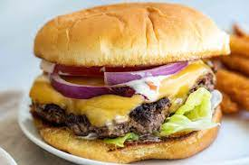

Classic Cheeseburger

A classic American Smash Burger
This burger is a timeless classic that any meat lover would enjoy. This style of burger creates much thinner patties compared to the tradition burger patty. The cooking method of this burger creates an explosion of flavor that many consider to be the best way to create a burger. I do recommend cooking this out in the open as the high heat will create a lot of smoke.
Ingredients
- 1 pound of 85/15 ground beef
- American cheese slices
- Brioche burger buns
- Salt and pepper
- Sliced iceberg lettuce
- 1 onion sliced
- Thinly sliced tomatoes
- Neutral cooking oil
- ketchup and mayonnaise
Steps
- Divide the meat into 6 even round balls.
- Heat the pan or grill up to a medium high heat allowing the pan to really come up to maximum temperature. Add oil only once the pan is searing hot.
- Quickly place a patty into the pan and using a hard flat surface SMASH the burger down with all your might and hold for a few seconds. The burgers will cook within seconds so make sure you are fast and flip when it looks cooked.
- Season the patties with salt and pepper to taste and then add cheese once it is almost fully cooked.
- As your patties are cooking toast up some buns to prepare for assembly.
- Assemble your burger by saucing the buns and placing your meat on them. Add any veggies that you want and enjoy!